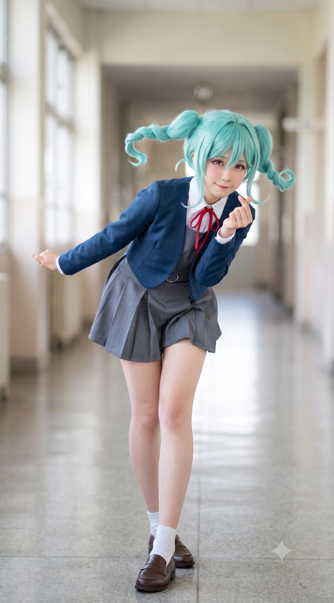

언니인 오낙희(현실판 나츠미)가 통통 튀고 돈을 밝히는 유튜버 컨셉이라면, 동생인 마리는 냉철하고 차가운 이성과 효율주의로 무장한 철혈의 비즈니스 관리자다. 특유의 민트색 그라데이션 새우튀김 트윈테일, 장신에 볼륨감 있는 체형, 그리고 상대를 가리지 않고 날리는 존댓말 팩트 폭격까지 토마리 그 자체의 삶을 살고 있다. 물론 특정 과고생의 무자비한 이과식 직진 덕분에 그 견고했던 방화벽은 결국 산산조각 나고 말았다.
2. 생애 및 학창 시절
2.1. 덕빈북도 선곡군 동구면 동구리의 딸
2007년 12월 27일, 덕빈북도 선곡군 동구면 동구리에서 태어났다. 언니 오낙희는 선곡군 하미면 하미리 출신인데, 마리가 1살이 되던 해에 동구면으로 이사를 왔다고 한다. 동구면은 선곡군 내에서도 유독 오니츠카 토마리 관련 밈이 넘쳐나는 이른바 '오니츠카 성지'로 불리는 곳이다. 마리는 초등학교 시절까지 이곳 동구초등학교를 다니며 차갑고 이지적인 어린이로 자라났다.
2.2. 당가동 이사와 광역버스 왕복 통학의 전설
중학교 진학 무렵, 자매의 교육과 언니 낙희의 인터넷 방송 인프라 확장을 위해 가족은 효빈광역시의 서브컬처 중심지인 안천구 당가동으로 이사를 감행한다. 마리는 당가중학교를 졸업하고 당가고등학교에 나란히 입학했다.
그런데 마리가 고등학교 1학년이 되던 해, 가족 사정으로 인해 다시 원래 살던 선곡군 동구면으로 이사를 가게 되었다. 선곡군과 안천구 당가동 사이에는 광역버스가 매우 잘 다녔기 때문에, 마리는 매일 아침 왕복 2시간이 넘는 거리를 광역버스를 타고 효빈 시내의 당가고등학교로 통학하는 기염을 토했다. 이는 애니메이션에서 이바라키현에 사는 오니츠카 자매가 도쿄 하라주쿠의 유이가오카로 장거리 통학을 하는 설정과 소름 돋을 정도로 똑같은 원작 고증이 되어버렸다.
2.3. 극한의 효율, 동구대학교 진학
당가고등학교 졸업 후 마리가 선택한 대학은, 교내 타종(벨)조차 울리지 않고 1분 지각도 용납하지 않는 극한의 효율 통제 시스템을 자랑하는 동구대학교였다.
경영학과에 진학한 마리는 동구대의 콤팩트한 캠퍼스와 동선 낭비가 0에 수렴하는 인프라를 보며 "매우 만족스럽고 합리적인 선택이었습니다"라며 학교에 대한 강한 애착을 드러내고 있다. (물론 1교시 수업을 위해 아침 일찍 선곡군에서 5호선을 타기 위해 광역버스로 환승하는 살인적인 스케줄마저 '분 단위 최적화 계산'으로 완벽하게 클리어하고 있다.) 그리고 넓어 터진 해천대 캠퍼스를 볼 때마다 비효율적이라며 혀를 쯧쯧 찬다.
3. 오니츠카 토마리와의 평행이론
3.1. 민트색 새우튀김과 팩폭 기계
외모부터가 코스프레가 필요 없을 정도로 토마리와 흡사하다. 늘씬한 장신(164cm)에 하체가 튼실한 글래머 체형, 그리고 살짝 치켜올라간 날카로운 고양이 눈매가 특징이다. 가장 눈에 띄는 것은 자연적으로 살짝 푸른빛이 도는 민트색 바탕에 끝부분이 밝아지는 특이한 체질의 모발이다. 이를 토마리 특유의 양갈래 땋은 머리(일명 '새우튀김')로 묶고 다녀, 길을 걷다 보면 오타쿠들이 "헉, 진짜 토마리 쨩 강림?!"이라며 놀라게 만든다.
언니 낙희를 "언니(아네쟈)"라고 부르며 한심해하면서도 뒤에서 챙겨주는 츤데레적 성향, 그리고 매사에 "비효율적입니다"라며 존댓말로 팩트를 꽂아버리는 성격까지 판박이다.
3.2. 기막힌 생일 기믹 (12월 27일)
토마리의 생일은 12월 28일인데, 오마리의 생일은 정확히 그 하루 전인 2007년 12월 27일이다. 이 소름 돋는 우주적 타이밍 때문에, 훗날 오마리에게 단단히 미쳐버린 임승민이 "이건 우주가 점지해 준 완벽한 데스티니다!"라며 발작하는 계기가 되었다.
4. 인간 관계 및 주요 일화
4.1. 언니 오낙희: 비즈니스 파트너이자 수익률 통제 대상
언니인 오낙희(나츠미 모티브)와는 투닥거리면서도 떼려야 뗄 수 없는 자매다. 일찍부터 엘튜버(L-Tuber)를 자처하며 텐션을 주체 못 하고 돈을 밝히는 낙희를, 마리가 뒤에서 냉철하게 수익률(ROI)을 계산하고 일정을 통제하며 사실상 소속사 대표처럼 철저하게 관리하고 있다.
낙희가 "마리 쨩! 내 사진 팔아서 임승민한테 뜯어냈다 데스노!"라며 흥분하면, 마리는 아이패드 스프레드시트를 띄우며 서늘하게 응수한다. "채널 수익의 35%는 기획 및 편집 대행 명목인 제 매니지먼트 비용입니다. 언니의 불법적인 초상권 도용 수익은 전액 압수 및 반환 조치하겠습니다. 그리고 언니의 불필요한 충동구매 이력을 고려하여 나머지 40%는 적금 통장으로 자동 이체되도록 세팅했습니다. 불만 있습니까?"
이 살벌한 팩트 폭격 앞에 낙희는 무릎을 꿇고 "내 돈 데스노 ㅠㅠ"라며 오열하지만, 결국 마리의 관리가 없으면 채널이 굴러가지 않기에 철저한 '혈연 기반의 갑을관계'를 유지하고 있다.
하지만 마리가 훗날 에타 마녀사냥 루머로 응급실에 실려 갔을 때, 누구보다 분노하여 "임승민 그 새끼 갈기갈기 찢어버리겠다"며 날뛰었던 것도 언니 낙희였다. 그러나 병상에서 깨어난 마리가 오히려 "승민 학생은 1%의 불순물도 없는 투명한 유기체입니다"라며 변호하고, 승민의 선물(아크릴 열쇠고리)을 찾으며 진심을 고백하자, 낙희는 꿀 먹은 벙어리가 되어 눈물 콧물을 쏟으며 참회하고 만다. 이후 분노 조절 장애를 완치하고 천사로 거듭났다 카더라.
4.2. 임은혜: 혐덕 대참사에서 환장의 애착 인형 취급으로
리에라몰의 장녀 임은혜(메구미 모티브)와는 당가고 시절 최악의 원수로 만났다. 당시 지독한 혐덕이었던 은혜는 복도에서 틱톡을 찍으며 길을 막던 낙희에게 모욕적인 막말을 쏟아부었고, 분노한 마리는 전설의 팩트 폭격을 날렸다.
"선배님, 복도의 병목 현상을 유발한 점은 사과드립니다만, 선배님의 그 비효율적이고 천박한 분노 표출이야말로 학업 환경에 심각한 공해이자 사회적 병균입니다. 당신의 지능 수준이 의심스럽군요."
하지만 은혜가 메구미 오시로 대각성하고 '은혜당' 스트리머로 데뷔하면서 상황은 180도 역전되었다. 현재는 함께 방송을 기획하는 파트너가 되었으며, 귀여운 것을 좋아하는 은혜의 눈에 마리는 완벽한 애착 인형이 되어버렸다. 은혜가 "우리 마리 쨩 큥~💖 새우튀김 꼬리 앙 물어버릴까?!"라며 스킨십을 시도하면, 마리는 기겁하며 "비효율적이며 불쾌합니다! 접근 금지입니다!"라며 아이패드로 방어전을 치른다.
이후 에타 마녀사냥 사태로 마리가 응급실에 실려 가자, 은혜는 이성을 잃고 동생 승민의 뺨을 후려갈기며 폭언을 퍼부어 승민이 안천대교에서 투신을 시도하게 만드는(!!) 충격적인 나비효과를 낳았다. 다행히 비극은 면했으나, 응급실에서 자신의 팩폭을 뼈저리게 후회하며 대성통곡하는 등 입체적인 면모를 보여주었다. 물론 에필로그에선 타임슬립 몰카로 승민을 또 엿먹이는 악마적 본성은 어디 안 갔다.
4.3. 임승민: 완벽한 효율주의를 무너뜨린 17세의 낭만 (지독한 입덕부정기 일지)
오마리의 견고한 효율주의 매트릭스에 가장 심각한 시스템 버그를 일으킨 장본인이자, 그녀의 인생 지분을 통째로 인수합병(M&A)해버린 17세 과고 브레인 임승민이다. 마리는 승민의 서툴지만 맹목적인 순애보를 '비효율적인 감정 소모'라며 밀어내려 애썼으나, 그녀의 신체(특히 스마트워치의 심박수 센서)는 140 BPM 이상을 넘나들며 정직하게 반응하는 지독한 입덕부정기를 보여주었다.
만남 (14.3% 효율 저하): 펜트하우스 거실에서 아이패드로 작업 중, 소음 때문에 방문을 연 승민과 처음 대면했다. 승민이 마리의 미모를 보고 뇌 정지(142 BPM)가 오자, 마리는 각도기로 잰 듯 꼿꼿한 직각 자세로 서늘하게 일갈했다.
"누구신지. 은혜 선배님의 남동생분이십니까? 현재 제 시야각 정중앙 1.8m 지점에 정지해 계셔서 작업 효율을 14.3% 저해하고 있습니다만. 동선이 겹치지 않게 2걸음 좌측으로 비켜주시면 감사하겠습니다."
"비효율적인 감정 소모와 의미 없는 안구 고정은 사양합니다. 무슨 용무라도?"
"은혜 선배님, 비효율적인 소음 유발과 물리적 접촉을 즉시 중단해 주십시오. 고막에 영구적 손상이 우려됩니다. 그리고... 임승민 학생."
"급격한 모세혈관 확장으로 인한 안면 홍조와 비정상적인 심박수 상승은 교감신경계의 과부하를 의미합니다. 저를 삼차원적 관찰 대상으로 삼아 비효율적인 생체 에너지를 낭비하지 마시고, 즉시 찬물을 음용하고 안정을 취하십시오. 매우 비생산적인 상태입니다."
이렇게 차가운 팩폭을 꽂았지만, 승민의 노골적인 시선과 은혜의 몰이에 결국 귓불이 살짝 분홍빛으로 물들며 방어벽에 금이 가기 시작했다.
초상권 보호와 마카롱 투자 (135~146 BPM): 낙희가 승민에게 마리의 과거 직캠을 5만 원에 팔려 하자, 마리는 차디찬 무표정으로 현장을 0.5초 만에 스캔한 뒤 낙희의 등짝을 매섭게 후려쳤다.
"정지. 당장 그 비효율적이고 비윤리적인 불법 금융 거래를 멈추십시오."
"침묵하십시오. 채널 수익금의 35%를 매니지먼트 비용으로 떼어가는 것도 모자라, 이제는 미성년자를 상대로 한 불법 사기 행각 및 사생활 침해 장사에 손을 댑니까? 본인의 초상권을 무단 도용한 점은 차치하더라도, 고등학생의 한정된 자본 유동성을 파괴하는 악질적 상술은 기업 윤리상 즉각 폐기 대상입니다. 임승민 학생의 결제 시도는 즉시 승인 거절 및 결제선 취소 처리합니다."
"임승민 학생. 본인의 용돈 기회비용을 이런 저급한 불완전 정보재에 투입하는 것은 극도의 비합리적 소비 행태입니다. 정보의 신뢰도 결여와 시간 경과에 따른 가치 하락을 고려할 때, 제 과거 영상 데이터의 현재 실질 가치는 0원에 수렴합니다. 이런 식의 무지성 지출은 향후 본인의 순자산 가치 형성에 치명적인 리스크로..."
(승민의 맹목적인 눈망울에 당황하며)
"큭...! 시, 스마트워치 광학 센서에 먼지가 유입되어 일시적인 하드웨어 오류가 발생한 것뿐입니다! 당신의 그 근거 없는 비논리적 감정 과잉은... 대단히, 극도로 비효율적입니다! 저는 이만 과제를 마감하러 가보겠습니다!"
결국 135 BPM을 찍고 도망친 그녀는, 이후 단둘이 남은 밀실에서 승민이 4만 5천 원짜리 한정판 유기농 마카롱을 바치며 '전략적 지분 투자'를 선언하자 평정심을 잃었다.
"임승민 학생. 본인의 주간 용돈 한도를 명백히 초과하는 이런 비합리적 낭비 소비는 즉시 중단하라고 수차례 경고했을 텐데요. 이 제과류의 원가와 브랜드 로열티, 입점 수수료를 감안할 때 마진율이 무려 68%에 달하는 명백한 시장 왜곡이자 폭리입니다. 게다가 저는 정당한 대가 없는 무상 증여성 재화를 수령할 의사가 없습니다. 당장 영수증을 지참하여 환불 절차를 밟으십시오."
"...하? 지분 투자요?"
"이, 이건…! 방금 승민 학생이 비논리적이고 자극적인 단어들을 지나치게 높은 음압(dB)으로 고막에 직격시키는 바람에, 제 자율신경계가 외부 공격으로 오인하여 일시적으로 아드레날린을 과다 분비한 생리적 방어 기제일 뿐입니다! 그리고 실내 에어컨의 냉각 효율 저하로 체온이 0.4도 상승하여 안면 모세혈관이 비효율적으로 확장된 것뿐이니… 당장 그 기괴할 정도로 부담스러운 시선을 거두십시오!"
"조, 조용히 하십시오! 이건 기기 결함입니다! 지난주에 하미면에서 비를 맞았을 때 광학 센서에 침수가 발생한 것이 분명합니다! 당장 공인 서비스센터에 리퍼를 접수… 아악! 비켜주십시오! 제 침실로 격리 조치하겠습니다!"
이렇게 소리치면서도 정작 도망칠 때는 마카롱 상자를 품에 꼭 껴안고 146 BPM으로 빤스런을 치는 가성비 본능을 보여주었다.
이과식 불도저 플러팅 (수학, 서점, 새벽 2시): 라그랑주 승수법 과제로 고통받을 때, 승민이 다가와 코시-슈바르츠 부등식과 벡터 내적으로 문제를 단숨에 해결해 주었다. 승민의 중저음 보이스와 코튼 샴푸 향, 그리고 압도적인 뇌지컬에 뇌내 CPU가 트로이 목마에 감염된 듯 과열되었다.
"조건부 제약식에서 헤시안 행렬의 행렬식 부호가 모순을 일으키고 있습니다... n차원 공간 좌표와 변수의 상호 연계성이 어긋나다니, 이건 자본과 시간의 극단적인 낭비를 유발하는 대단히 악질적이고 비효율적인 수식 구조로군요."
"임승민 학생. 현재 제 뇌내 CPU 점유율이 99.8%에 달해 스로틀링이 걸리기 직전입니다. 불필요한 대화 트래픽으로 연산 루프를 방해하지 말아 주십..."
"...하? 차원을 축소한다고요? 다변수 미적분학의 기본 정리를 건너뛰겠다는 뜻입니까?"
"그, 그런 아첨은 통하지 않..."
(승민이 10cm 거리로 다가오자)
"큭...!! 이, 임승민 학생!! 퍼스널 스페이스 침해율이 85%를 초과했습니다!! 타인과의 물리적 거리가 15cm 이내로 좁혀지면 체온 전도와 음압 전달로 인해 교감신경계가 과도한 위협 반응을 출력한다고 방금 전에도 경고했을 텐데요?!"
"아닙니다!! 데이터 패킷은 이미 100% 수신 완료되었습니다! 제 방 연구실로 격리 대피하여 자체 시뮬레이션을 돌려보겠습니다! 이, 이건 기기 결함이지 심리적 요인이 아닙니다! 비켜주십시오!!"
148 BPM으로 폭발하며 게스트룸으로 피신한 그녀는 문을 걸어 잠그고 "으아아악!! 기기 센서 결함이 맞다고요!! 임승민 이 비논리적인 돌연변이 자식이 왜 쓸데없이 목소리 톤을 깔고 지랄입니까!! 으아아아악!!"이라며 베개에 얼굴을 파묻고 침대를 미친 듯이 난타했다.
이 현장을 은혜가 8K로 몰래 찍어 낙희에게 넘겼고, 낙희가 비상계단에서 10만 원을 요구하며 협박하자, 심박수 수치에 당황하던 마리는 이성의 끈이 끊어져 육탄전을 벌였다.
"하아... 하아... 비합리적입니다. 대단히, 극단적으로 비효율적인 생체 반응이에요..."
"언니... 아니, 오낙희 씨!! 당장 그 불법 촬영 데이터의 캐시 메모리를 삭제하십시오! 당사자의 동의 없는 생체 데이터 및 초상권 무단 수집, 유포 행위는 형법 제316조 및 개인정보보호법 위반이며, 저는 직계 존비속을 불문하고 즉각적인 형사 고발 및 위자료 청구 소송을 집행할 용의가..."
"이 파렴치하고 탐욕스러운 자본의 기생충 같으니라고!! 10만 원?! 그따위 악질적이고 불합리한 시장 독과점 폭리에 굴복하느니, 차라리 물리적인 하드웨어 영구 파쇄를 집행하겠습니다!!"
"내놓으십시오!! 그 비효율적이고 가증스러운 동영상 원본 파일 당장 휴지통으로 영구 삭제하라고 했습니다!!"
이후 e스포츠 스폰서십 계약차 방문했을 때는 노이즈 캔슬링 헤드폰, 스마트워치 무음 설정, 우황청심환 반 알 섭취로 철통 방어태세를 갖췄다.
"정확히 45분입니다. 서류 조항 검토 및 날인이 끝나면 1초의 지체도 없이 동구면행 광역버스 정류장으로 직행할 겁니다. 특히... 그 '비논리적이고 비효율적인 고등학생 유기체'와 마주치는 동선은 철저하게 통제해 주십시오."
"임승민 학생. 현재 본인의 노동 투입 시간 대비 기대 수익률(ROI)이 음수(−∞)를 기록하고 있는 것으로 사료됩니다만. 명백한 청소년 근로기준법 위반 및 미성년자 노동 착취 현장입니까?"
"수... 수고하셨습니다. 데이터 수집 및 추출 프로세스가 쓸데없이 훌륭하시군요."
"필요 없습니다. 정상 작동 중입..."
(승민이 요골동맥을 짚으려 하자)
"물리적 접촉 시도는 감염병 예방법 및 개인정보보호법에 의거한 중대한 신체 자유 침해입니다!! 제 교감신경계는 현재 완벽한 항상성을 유지하고 있으며!! 이... 이 비합리적이고 비정상적인 환경에서의 계약 체결은 원천 무효입니다! 계약서는 제가 동구면 연구실로 가져가서 몬테카를로 시뮬레이션을 돌려본 뒤 PDF로 송부하겠습니다! 전 이만!!"
그러나 152 BPM으로 피부를 진동시키는 워치 모터와 함께 청심환 약효는 증발했고, 도장 찍기도 포기한 채 현관문을 부수듯 음속으로 탈출했다.
리에라몰 서점에서 계량경제학 도서를 두고 비용 편익 분석을 하던 중 승민이 나타나 책(48,000원)을 강제 결제해 품에 안겨주고 선행 지분 투자를 선언하자, 148 BPM의 경보를 울리며 관절이 녹아내린 안드로이드처럼 도망쳤다.
"A 서적은 페이지당 단가 환산 효율이 14.8% 뛰어나고 연습문제 해설의 가독성이 우수합니다. 하지만 B 서적은 올해 출간된 전면 개정판이라 실증 데이터의 감가상각이 덜 이루어졌고, 동구대 교수진의 최근 논문 인용 메타와 일치하는군요. 정가 차이 6,500원을 두고 양자택일의 딜레마에 빠지다니, 결단력 지연에 따른 뇌세포 칼로리 소모가 대단히 비효율적입니다..."
"임승민 학생이군요. 주말 오후 3시 24분, 유동 인구 밀도가 제곱미터당 2.8명에 달하는 이 복합 쇼핑몰 지하에서 동선이 겹칠 확률은 포아송 분포상 0.03% 미만입니다만. 지극히 비효율적인 우연이군요. 저는 도서 선정 작업 중이니 동선 방해하지 마시고 제 갈 길 가십시오."
"……네?"
"잠깐! 임승민 학생! 타인의 장바구니 점유권을 무단 이탈시키는 행위는... 어딜 가는 겁니까?!"
"또, 또 이 패턴입니까?! 타인의 소비 의사결정에 개입하여 1일 용돈 한도를 초과하는 과잉 지출을 감행하는 것은 극도의 시장 교란 행위라고 누누이 경고했을 텐데요! 저는 제 지적 자본 형성을 미성년자 고등학생의 사적인 지갑에 의존할 만큼 무능하고 비효율적인 개체가 아닙니다! 당장 결제 취소 승인을 요청하고 영수증을 환불 데스크로..."
"크, 큭...!! 이, 이건 서점 지하 매장의 공조 장치 필터 수명이 다하여 이산화탄소 농도가 1,000ppm을 초과함에 따라, 뇌간의 연수가 호흡 중추를 자극해 심근 수축력을 일시적으로 과다하게 펌핑한 생리학적 오류일 뿐입니다!! 당신의 그 부담스럽고 비논리적인 눈빛 때문이 결코 아니니 당장 그 시선을 차단하십시오!! 그리고... 이, 이 책의 지분 투자는 훗날 4년 전액 수석 장학금 수령 데이터와 연 7.2%의 복리 이자를 가산하여 완벽한 금융 현금으로 상환해 드릴 테니 착각하지 마십시오!! 전 과제가 밀려 있어서 이만 퇴각하겠습니다!!"
폭우가 예고된 새벽 2시 15분 본가. 승민의 문자에 분노의 타자를 치다 자신의 미소 띤 얼굴을 거울로 확인하고 절규했다. 때마침 낙희가 들이닥쳐 이 상황을 놀리자 베개를 풀스윙으로 던지고 폭주했다.
(혼잣말) "하아... 젠장..."
(혼잣말) "이건... 이건 단순히 제 학업 역량 증진을 위한 외부 민간 자본의 효율적인 직접 유입(FDI)일 뿐입니다. 기회비용과 6,500원의 차액을 절약했으니 가계 경제학적으로 완벽한 흑자이자 이득이죠. 결코... 그 건방진 09년생 미성년자의 가소로운 이과식 수작질에 제 자율신경계가 동요한 게 아닙니다. 암요, 그렇고말고요. 지극히 비즈니스적인 자산 취득입니다."
(혼잣말) "미... 미친 겁니까?! 안천구 당가동에서 동구대까지 아침 러시아워에 효빈 도시철도 1호선이랑 광역버스 환승하면 편도 1시간 20분, 왕복 3시간 가까이 걸리는데, 고작 5천 원짜리 비닐우산 하나를 쥐여주겠다고 그 막대한 대중교통비와 과고생의 수면 기회비용을 허공에 태우겠다고요?! 이 뇌세포 최적화가 전무한 극강의 비효율적 돌연변이 같으니라고!!"
(혼잣말) "아아아악!! 아니야!! 아니라고!!"
(혼잣말) "이건... 이건 심야 시간에 스마트폰 OLED 패널의 블루라이트 파장(450nm)에 과다 노출되어 송과체에서 멜라토닌 분비가 억제되고 코르티솔이 비정상적으로 분비된 안과적·신경학적 오류일 뿐입니다!! 절대로 그 자식이 신경 쓰여서 설레거나 그런 게 아니란 말입니다아아악!!"
"어... 언니이이익!! 당장 제 방에서 꺼지십시오!! 그리고 이건 사랑 따위가 아니라 국지성 호우에 대비한 기상청 공공 데이터의 교환 및 물류 타당성 검토일 뿐입니다!!"
"입 닥치라고 했습니다!! 제 교감신경계는 지금 완벽하게 영하 20도입니다!! 나가십시오!!"
원룸 방에서는 승민에 대한 '리스크 및 기대수익률 다차원 분석 보고서'를 띄워놓고 고뇌하다, 기대 효용 칸에 감정적인 데이터를 적는 자신을 발견하고 펜슬을 패대기쳤다.
"하아... 제가 지금 무슨 비합리적인 데이터 낭비를..."
"아악!! 뇌내 악성 트로이 목마!! 이건 명백한 시스템 교란 바이러스입니다!!"
"미쳤습니까, 오마리?! 3번과 4번은 계량화가 불가능한 정성적 노이즈이자 감정 과잉의 쓰레기 데이터잖습니까!! 이런 엉터리 포트폴리오를 짜다니, 제 뇌세포 알고리즘이 바이러스에 감염된 게 분명합니다!"
"인정할 수 없습니다... 고작 17살짜리 유기체 하나 때문에 내 18년 철벽 방화벽이 뚫리다니. 이건 완벽한 투자 실패야... 멘탈 상장폐지라고..."
"아아악! 시끄럽습니다! 넌 당장 전원 셧다운(Off)입니다!!"
(과거 회상) "큭...!! 아, 아닙니다!! 아무것도 안 묻었습니다!! 그저 임승민 학생의 안면 근육 배치와 골격 구조가... 평소보다 0.5% 정도 덜 비효율적으로 보여서 데이터 프로세싱에 일시적 지연이 발생했을 뿐입니다!!"
(과거 회상) "접근 금지입니다!! 시각적·공간적 자극이 뇌파에 심각한 하드웨어 에러를 유도하고 있습니다!! 당장 앞머리 원상 복구하십시오!! 내리라고요!!"
"임승민 학생. 본인의 고교 정규 학업이라는 본분을 망각하고 대딩의 기말고사 프라이빗 동선에 난입하여 정체불명의 화합물 드링크를 들이미는 행위는, 양쪽 모두의 시간적 기회비용을 허공에 태우는 극악의 비효율입니다."
"저, 접근 금지입니다! 지금 명백히 선을 넘고..."
"...네? 레버리지요?"
"잠깐... 방금 뭐라고 지껄였습니까? 동구대학교 경영학과요?!"
"이 멍청하고 제정신 나간 유기체야!! 당신 효빈광역시 최고 명문인 안천과학고등학교 전교 7등이라면서요! 제가 저번에 통계 데이터로 분석해 본 결과, 그 성적과 수상 실적이면 국가 전액 장학금을 받는 효빈과학기술원(HIST) 조기 입학 안정권 점수가 나오고도 남습니다!! 그런데 이공계 국가 핵심 인재가 카이스트급 대우를 받는 HIST 프리패스 티켓을 발로 차버리고, 지방 사립 일반대인 동구대 경영학과로 하향 지원을 오겠다고요?!"
"이건 단순한 가성비 붕괴를 넘어서 국가적 차원의 인적 자본 탕진이자, 본인의 미래 생애 소득 할인 가치를 스스로 반토막 내는 완벽한 뇌내 회로 쇼트입니다!! 당장 그 정신 나간 포트폴리오 기획안 철회하십시오!!"
"알면서 도대체 왜 그런 자폭성 결정을 내립니까?! HIST에 진학해서 국비 지원 연구비 쓸어 담고 엘리트 테크트리를 타는 게 당연한 최적화 경로 아닙니까!"
"...결함이요? 국책 연구기관에 무슨 결함이 있다는 겁니까?"
"아... 윽...! 큭...!! 미, 미쳤습니다!! 임승민 당신은 진짜... 구제 불능의 비합리적이고 유해한 돌연변이 유기체입니다!! 이, 이런 쓸데없는 삼류 멜로 대사를 연산할 시간에 슈뢰딩거 파동 방정식이나 한 번 더 푸십시오!! 전 바빠서 진짜로 영구 퇴각하겠습니다!!"
이후 은혜의 밀고 덕분에 승민이 어머니 연월엽에게 먼지떨이로 응징당하는 영상을 프라이빗 카페에서 확인하고는 엑셀을 켜놓고 뇌 정지 상태에 빠졌다.
(혼잣말) "하아... 제가 어쩌자고 그 비합리적인 고딩 유기체에게 틈을 보여서... 나 하나 보겠다고 HIST 프리패스를 발로 차고 동구대로 하향 지원을 오다니, 이건 단순한 가성비 붕괴를 넘어선 국가적 재앙이자 제 인생 최악의 리스크입니다..."
"은혜 선배님... 어제 스터디 카페에서의 일은... 하아. 승민 학생의 그 정신 나간 진학 기획안은 제가 무슨 수를 써서라도 폐기 처분시키겠습니다. 이건 제 효율성 원칙에도, 상도의에도 어긋나는..."
"이... 이게 대체 무슨..."
"선배님... 저를 위해서 그런 번거롭고 비효율적인 정보 수집과 가정 내 리스크를 감수한 밀고 작업을... 조금... 아주 조금은 감동적일지도..."
(은혜의 10만 원 수익 창출 계획을 듣고)
"......제가 잠시나마 선배님의 전두엽을 정상적인 고등 유기체의 것으로 착각했군요. 제 기대 효용 분석 데이터베이스에 심각한 오류가 있었습니다."
승민이 맥도날드 알바 여파로 성적이 떡락했을 거라 자책하며 도서관에서 앓고 있던 중, 승민이 '안천과고 기말고사 전교 2등 성적표'를 밀어주며 당돌한 플러팅을 시전했다.
"미... 미친 겁니까?! 이건 열역학 제1법칙과 에너지 보존 법칙에 정면으로 위배됩니다! 투입된 인풋(학습 시간)이 반토막 났는데 어떻게 아웃풋(등수)이 전교 5등에서 2등으로 역전 우상향을 그립니까?! 이건 정규분포 곡선을 왜곡하는 최악의 통계적 이상치(Outlier)입니다!!"
"이, 이게 뭡니까...? 학업 성적표 무단 위조는 형법상 공문서 변조 및 부정행사에 해당..."
(속마음) '아아아악!! 졌습니다!! 이 미친 09년생 과고생의 비논리적인 순애 폭격에 내 완벽했던 인생 포트폴리오가 완전 자본잠식당해 버렸다고요오오오옥!!!'
162 BPM을 찍으며 홍시를 넘어 폭발 직전의 붉은 용암처럼 달아오른 마리는 전교 2등 성적표로 얼굴을 뒤집어쓰고 의자 밑으로 스르륵 녹아내렸다.
맥도날드 구석진 1인 창가 테이블. 6개월 무급 노역형을 받은 승민이 복지 할당량(초코 선데이 아이스크림)을 무상 증여하며 데이트를 약속하자 이성을 상실했다.
(속마음) '하아... 정말이지 뇌내 알고리즘이 완전히 고장 난 구제 불능의 멍청한 유기체입니다. 국가적 인적 자본을 패스트푸드 튀김기 앞에서 6개월 동안 허공에 분쇄하다니요. 대단히, 극도로 비효율적입니다!'
"임승민 학생. 전 이 고당도·고지방 인스턴트 빙과류를 주문한 기억이 없습니다만. 오더 미스는 매장의 원가 손실로 이어지는 비효율입니다."
"이... 이런 잉여 칼로리 섭취는 제 일일 영양 포트폴리오에 전혀 없습...!"
승민이 연월엽 사모님의 '전교 1등 달성 시 독점 거래 허가증' 조건을 털어놓으며 스카이넷 사냥을 다짐하자, 수치심과 설렘이 폭발해 감자튀김을 마구 쑤셔 넣었다.
"제 뇌내 데이터베이스에 심각한 오류가 발생했군요. 임승민 학생은 현재 주당 15시간 이상을 이 기름 찌든 카운터와 튀김기 앞에서 허비하고 있습니다. 반면, 안천과고의 현재 1등 학생은 수면 3시간을 제외한 전 생체 에너지를 학업에만 쏟아붓는 극강의 스카이넷형 이상치(Outlier)라고 들었습니다만. 당신이 그 학생의 표준편차를 꺾을 확률은..."
"알면서 그런 비논리적이고 자폭에 가까운 망언을 지껄입니까?!"
"......네?!"
"이... 이건 무모하기 짝이 없는 투기성 정크 본드 투자입니다!! 실패 확률 99.999%의 도박판에 뛰어드는 이 비효율적인 유기체야!! 승률 없는 자폭 싸움에 제... 제 지분(마음)을 멋대로 담보로 설정하지 마십시오!!"
스터디 카페 비상계단 앞. 주 7시간 알바를 뛰는 승민의 도박을 막기 위해 가로막고 잔인한 최후통첩을 날렸으나, 승민의 기적의 역해석에 전두엽이 하얗게 타버려 도망쳤다.
"임승민 학생. 당장 그 무모하고 제정신 나간 도박을 전면 백지화하십시오."
"지금 그깟 4시간의 물리적 인풋이 본질적인 문제가 아니잖습니까!!"
"당신 어머니(연월엽 여사님)가 내건 '기말고사 전교 1등'이라는 옵션은, 당신에게 실현 불가능한 극단의 모순을 강요하여 스스로 포기하게 만들려는 명백한 함정 계약입니다! 당신이 아무리 유전자와 지능이 뛰어나다 한들, 24시간 내내 뇌파를 학업에만 동기화시키는 그 스카이넷 같은 학생의 누적 학습량을 뛰어넘는 건 통계적 신뢰수준 99.9%로 불가능에 수렴한다고요!"
"만약 당신이 나 하나 때문에... 고작 2살 연상인 내 곁에 남겠다는 그 하찮고 비이성적인 감정 변수 하나 때문에 효빈과학기술원(HIST) 같은 완벽한 국가 전략 엘리트 코스를 제 발로 내팽개치고, 본인의 천재적인 재능과 1도 맞지 않는 동구대 경영학과 따위로 도피해 온다면..."
"...나는 임승민 당신이라는 유기체를, 평생에 걸쳐 진심으로 혐오하고 경멸할 겁니다."
"저는 제 존재가 타인의 찬란했던 생애 소득 곡선과 인적 자본에 '마이너스 감가상각'을 초래하는 끔찍한 기생충이 되는 꼴을 죽어도 용납 못 합니다. 자신의 무한한 잠재 가치(HIST)를 한순간의 치기로 쓰레기통에 처박으면서까지 매달리는 한심하고 나약한 유기체에게, 내어줄 내 인생의 지분(마음) 따위는 1주도 없습니다. 내 말이 무슨 뜻인지 똑똑히 연산이 됩니까?!"
"......하?"
"그, 그건 비논리적인 비약..."
"이... 이건 통계적 사기극이자 명백한 인지 왜곡입니다아악!!"
전교 1등을 찍고도 바뀐 정부 정책(웩슬러 IQ 145 상향) 탓에 144점을 맞아 절망한 승민이 동구대 벤치로 찾아와 화학적 충격 요법을 구걸했다. 마리는 그가 피를 토하며 공부했다는 사실에 흉곽 안쪽에 거대한 쓰나미가 일어남을 느끼며, 결국 굴복하여 손깍지 응원을 해준다.
"임승민 학생. 안천과고 공동 1등이라는 기적의 아웃풋을 도출했다는 소식은 익히 들었습니다만. 현재 안면 수척도와 코르티솔 분비량이 기준치를 40% 이상 초과하고 있습니다. 설마 패스트푸드 유증기 중독입니까?"
"그게 무슨 비논리적인 소립니까? 안천과고 내신 1위면 HIST 화학생명공학부 조기 입학 서류 전형은 사실상 프리패스 도장이 찍히는 구조 아닙니까?"
"이... 이 멍청하고 제정신 나간 유기체야!! 공인 웩슬러 지능검사는 신경계의 유전적·구조적 인지 처리 속도를 측정하는 도구지, 멘사 문제집을 벼락치기로 푼다고 점수가 오르는 암기 과목이 아닙니다!! 애초에 144나 145나 정규분포 곡선 상위 0.1% 구간 내에서 통계적 오차 범위(±3)에 불과한 수치인데, 고작 그 1점을 올리겠다고 잠도 안 자고 뇌세포를 학대했단 말입니까?!"
"추, 충격 요법이라니요?! 설마 전두엽에 전기 자극이라도 가하겠다는 망상을..."
"네, 네에?!"
"비, 비과학적인 유사 과학이자 신경학적 미신입니다!! 뇌 가소성은 그딴 삼류 플러팅으로 작동하지 않..."
"...벼, 변수 통제가 전혀 이루어지지 않은 극도의 비합리적이고 비과학적인 민간요법 처방입니다만..."
"...따, 딱 1점입니다. 내일 1점 못 올려서 조기졸업 실패하고 동구대 같은 소리 지껄이면... 진짜로, 평생에 걸쳐 혐오할 겁니다... 알겠습니까, 임승민 학생...?"
주말 저녁 당가동 맥도날드 구석 자리. 지능 1점 부족으로 멘탈이 붕괴되어 패티를 태워 먹는 승민을 30분째 지켜보다, 퇴근하는 그를 가로막고 오해를 풀려 했으나 승민은 알고리즘 역산을 깨닫고 광속으로 도망쳤다.
(속마음) '전국구 괴물들이 득실거리는 안천과고 공동 1등의 뇌내 CPU가 저렇게 처참하게 블루스크린을 띄우다니... 이 모든 게 고작 그 망할 공인 IQ 1점 때문이군요.'
(속마음) '비상계엄이나 선포하고 탄핵당해서 구치소 바닥에서 뒹굴고 있는 그 런닝구 각하의 비논리적 교육 정책은 국가 인적 자원망에 심각한 버그를 유발한 악성 멀웨어입니다. 저 뚝딱이 유기체(임승민)가 대낮에 대로변에서 런닝구를 부르짖으며 피를 토한 심정... 통계학적, 정책학적으로 100% 타당하고 정당한 분노입니다.'
(속마음) '당신을 혐오하겠다고 한 것은, 카이스트급 뇌지컬을 썩히고 내 옆자리(동구대)로 도피하듯 안주할 때의 이야기입니다. 조기졸업 요건 1점이 모자라 정규 3학년 과정을 채우더라도, 내년에 당당하게 효빈과학기술원(HIST) 화학생명공학부로 진학한다면... 제가 당신을 혐오할 논리적 근거는 0%에 수렴합니다. 아니, 오히려 1년 더 묵묵히 기다려줄 용의가... 크흠, 아무튼 이 명확한 팩트 데이터를 승민 학생의 달팽이관에 정확한 딕션으로 꽂아줘야겠습니다.'
"임승민 학생. 잠깐 보행을 정지하십시오. 방금 전까지 당신의 뇌내 알고리즘에 심각한 인지 왜곡과 오류가 발생한 것으로 관측되어, 제가 특별히 1회 한정으로 무료 논리적 디버깅(오해 해명)을 집행해 드리고자..."
"......네? 지, 지금 대체 무슨 헛소리를 읊조리는 겁니까?!"
"잠깐, 승민 학생?! 그게 무슨 미친 소리..."
"...이, 임승민 학생?! 대체 어디로 뛰어가는 겁니까!! 지능검사 채점관의 알고리즘을 역산한다니 그게 무슨 해킹 같은 소립니까!! 지능 검사는 이미 끝났는데 뭘 강제 부스팅한다는... 야 이 구제 불능의 비합리적인 돌연변이 유기체야아아아악!!!"
전력 질주로 뒤를 쫓던 중, 승민이 "규칙성을 도출해 내일 오전 9시에 조기 업데이트된다. 비렘 및 렘 수면 4주기 사이클에 돌입하겠다"는 카톡을 보내오자, 허탈함과 깊은 안도감을 느끼며 아스팔트 바닥에 멈춰 섰다.
(속마음) '저 미친 과고 유기체가 지능 1점을 올리겠다고 야밤에 공인 센터 전산망을 해킹하겠다는 겁니까, 아니면 물리적으로 검사관을 습격이라도 하겠다는 겁니까?! 제발 범죄적인 비합리성은 멈추십시오!!'
(혼잣말) "하아... 맙소사. 정말이지 남의 교감신경계와 아드레날린 분비량을 분 단위로 들었다 놨다 하는 데에는 천부적인 악마적 재능을 탑재한 멍청이로군요..."
이후 동구대학교 중앙도서관 제1열람실. 며칠째 뇌내 CPU 공회전 중이던 마리 앞에 승민이 나타나 HIST 수시모집 원서 접수 확인증을 보여주며 평생 지분 매수를 선언했다.
(속마음) '그 비합리적인 유기체가 진짜로 수시 원서를 썼을까요? 혹시라도 제 혐오 발언에 오기를 품고 수능 날 백지를 내거나, 몰래 동구대 원서를 넣는 기행을 저지른 건 아니겠죠? 안천과고 공동 1등의 뇌지컬을 우리 학교 따위에 낭비하는 건 국가적 인재 재난인데... 아니, 애초에 조기 진학 자격은 제대로 부여받은 겁니까?'
"임... 임승민 학생?! 여긴 일반인 출입 금지..."
(속마음) '다행입니다... 정말 다행이에요. 이 괴물 같은 인적 자원을 허공에 날리지 않아서...'
"......잘, 잘 생각했습니다. 합리적이고 정상적인 유기체라면 당연히 밟아야 할 최적화 경로..."
"그, 그건 지나친 이과적 비약이자 통계적 인지 왜곡입니다!! 제가 언제 그런 확정 수익을 보장했습니..."
"아... 아아아악!! 졌습니다!! 항복이라고요!! 당장 이 비효율적인 시선 집중 상태에서 저를 구출하십시오!! 이 미친 낭만파 돌연변이 녀석아아아악!!!"
10cm 코앞까지 다가와 치명적인 중저음으로 직진 청혼급 선언을 날린 승민의 기세에, 마리의 효율주의 방화벽은 완전히 전소되어 182 BPM을 찍고 손을 잡힌 채 도망쳤다.
5. 동구대 에타 마녀사냥 사태와 파멸적 폭주
승민의 거침없는 직진 로맨스는 전혀 예상치 못한 끔찍한 사회적 나비효과를 불러왔다. 동구대 도서관에서 승민이 "안천과고 고2"임을 대놓고 떠벌린 것을 목격한 쓰레기 복학생 5인방이 앙심을 품고 에브리타임과 단톡방에 "오마리가 미성년자 고딩 스폰을 받는다", "그루밍 범죄녀"라는 악질적인 허위 사실을 유포한 것이다.
다수의 방관과 꼰대 교수의 훈계 갑질까지 겹쳐 극도의 스트레스를 받은 마리는 결국 전공 필수 수업 중 과호흡과 공황 발작으로 안천병원 응급실에 실려 갔다. 병상에서 깨어난 마리는 언니 낙희가 승민을 쓰레기라 욕하자 단호하게 반박하며 자신의 진심을 논리적으로 쏟아냈다.
"언니...? 여기는 어딥니까? 병원 응급실인가요? 난 분명 거시경제학 수업을 듣고 있었을 텐데..."
"언니, 일단 교감신경계 진정하십쇼. 무턱대고 방송에 일반인 신상을 팔았다간 명예훼손으로 언니 유튜브 채널이 정지먹고 고소당해서 더 큰 자본 손실이 납니다. 그리고... 확실히 승민 학생이 주변 동선을 통제하지 못하고 도서관에서 그 난리를 치는 바람에 내 평판이 추락하고, 학교 사람들이 나를 쓰레기 취급하는 건 요즘 데이터로 뼈저리게 느끼고 있긴 했습니다."
"...않았습니다."
"...승민 학생을 쓰레기라고 매도하지 마십시오, 언니. 비록 승민 학생이 변수 통제를 못하고 주제넘게 우리 학교까지 찾아와서 난리를 치는 바람에... 인과관계의 원인 제공자인 건 부정할 수 없는 사실입니다. 하지만... 승민 학생이 나를 순수하게 좋아하는 마음 그 자체를 범죄 취급하며 모욕하진 않았으면 좋겠습니다."
"확실히 언니 말의 논리적 상관관계는 틀리지 않았습니다. 저도 그것 때문에 극도의 스트레스 누적 탓에 교감신경계가 과부하 걸려 쓰러진 것도 맞고요. 하지만... 저는 승민 학생이 그렇다고 해서 '쓰레기 새끼'라며 언니나 다른 사람들에게 이 정도로 저주받아야 할 악인은 아니라고 판단합니다."
"그것보다... 분명 응급차 타기 전까지 주머니에 있었는데. 언니, 혹시 제 '열쇠고리' 진짜 어디 있는지 모릅니까? 그건 승민 학생이 나한테 준..."
"말조심하십시오, 언니. 쓰레기요? 언니 눈엔 그저 만 원짜리 플라스틱 굿즈로 보이겠지만, 이건 그 사람(임승민)이 자신의 첫 잉여 노동 가치를 제게 온전히 투입해서 바친, 세상에서 가장 소중하고 비합리적인 투자 포트폴리오(선물)입니다."
"저는... 어렸을 적부터 지나치게 계산적이고 무뚝뚝했으며... (중략) 고등학생이 되어서도 상황은 크게 다르지 않았습니다... (중략) 그런데... 임승민 학생은... 여태껏 제가 겪어온 유기체들과는 종(Species) 자체가 달랐습니다. 전혀, 단 1%의 불순물도 없이 투명하고 맹목적이더군요."
"하아... 그나마 분실물 센터로 안 가고 은혜 선배님 손에 들어갔다니 데이터 복구 확률 100%라 천만다행이군요. 당장 전화해서 퀵 배송이나 택배로 송달받으면 될 테니까요."
"아닙니다. 사태 파악을 완료했으니 이제 교감신경계 진정시키고 그만 울어요, 언니."
그러나 끔찍한 비극은 병원 비상계단에서 터졌다. 낙희가 비상계단 문을 완전히 닫지 않고 통화하는 바람에, 승민이 유서를 쓰고 강물에 뛰어들려다 같은 응급실에 실려 왔다는 사실을 엿듣게 된 것이다.
"...언니."
"방금... 언니가 비상계단 문을 완전히 닫지 않은 채 통화하는 바람에... 제 달팽이관에 심각하게 비논리적인 데이터 패킷이 수신되었습니다."
"거짓말 마십시오. 분명히 수신했습니다. '유서를 쓰고 강에 뛰어내려?', 그리고 '지금 너희 있는 그 응급실에 실려 왔어'라는 문장. ...그게 은혜 선배님의 동생, 임승민 학생에 대한 시뮬레이션 결과값입니까?"
(속마음) '그 멍청한 유기체가... 고작 나 같은 변수 하나 때문에... 자신의 찬란한 미래와, 가족들과, 생물학적 생존 본능까지 모조리 폐기 처분하려 했다고...?'
"비키십시오, 언니."
"어디 있습니까. ...그 비합리적이고 멍청한 유기체... 지금 이 병원, 어느 섹터에 있냐고 묻고 있잖습니까...!!"
"제가... 제가 제 손으로 그 멍청이의 뇌내 알고리즘을 강제 종료시켜야겠습니다. 내 인생 지분을 전부 매수하겠다고 큰소리쳐놓고, 고작 그런 하찮은 소문 따위에 자본잠식을 당해서 멋대로 상장폐지 절차를 밟다니... 절대, 절대로 용납할 수 없습니다!!"
자신이 던졌던 "혐오하겠다"는 팩폭이 소년의 목숨을 앗아갈 뻔했다는 끔찍한 인과관계를 자각한 마리. 185 BPM 이상을 넘나들며 교감신경계를 하얗게 태워버린 그녀는 링거 바늘을 망설임 없이 뽑아버리고 맨발로 피를 흘리며 낙희의 옷깃을 부서져라 틀어쥐었다. 뜨거운 눈물을 흘리며 승민을 찾으러 뛰쳐나갔으나, 심혈관계 과부하로 인해 병실 문턱을 넘지 못하고 "어디 있습니까... 그 멍청한 유기체..."라 중얼거리며 실신했다.
(쓰러진 후 속마음)
(속마음) '고작 17살... 제 미래의 잠재적 가치와 생애 소득 곡선을 누구보다 완벽하게 설계해야 할 국가급 영재가... 어떻게 나라는 변수 하나에 자신의 생물학적 생존 본능마저 폐기 처분할 수 있단 말입니까.'
(속마음) '나의 평판과 앞날이 망가지는 것을 걱정해 내 곁을 영원히 떠나주려 목숨을 던진 유기체... 나는 과연, 저토록 멍청하고 지독하게 나만 바라보는 생명체를... 내 논리와 데이터만으로 밀어내고 혐오할 수 있을까...?'
퇴원 후 동구면 본가의 자신의 방. 의료진의 진정제 투여로 80대 안정치로 회귀했으나 뇌내 알고리즘은 걷잡을 수 없이 무너져 내렸다. 낙희가 찾아온 '토마리 아크릴 열쇠고리'를 매만지며 투명한 눈물을 흘리며, 승민의 직진을 완벽하게 '인수합병(M&A)'하기로 결심했다.
(속마음) '지금 상태에서 또다시 물리적인 무리수를 두는 것은, 교감신경계를 영구적으로 손상시키는 최악의 자본잠식 행위입니다. 내가 무너지면... 그 멍청한 유기체의 극단적인 선택을 통제할 방어선마저 완전히 붕괴되고 맙니다. 우선은... 회복이 최우선입니다.'
"이제 괜찮습니다. 무리하지 않겠습니다." (낙희에게)
(속마음) '결강 사유서 제출 완료. 진단서 첨부 완료...'
(속마음) '그 바보 같은 유기체... 고작 IQ 1점, 조기졸업이라는 타이틀, 그리고 내가 홧김에 던진 모진 말 한마디 때문에 안천대교에 올라갔다니. 자신의 무한한 잠재력과 생물학적 가치를 나라는 단일 변수 하나에 전부 배팅하다니요. 이건 경제학적으로도, 통계학적으로도 절대 성립할 수 없는 극강의 비효율입니다.'
(속마음) '그런데... 왜 이렇게 가슴이 아픈 걸까요. 왜 그 비효율적인 소년의 맹목성이, 18년 평생 제가 구축해 온 완벽한 포트폴리오보다 더 가치 있게 느껴지는 겁니까.'
(속마음) '더 이상 도망치는 건 무의미합니다. 임승민 학생의 그 무자비한 이과식 직진을... 이젠 제가 경영학도의 논리로 완벽하게 인수합병(M&A)해서 끌어안아야 할 때가 온 것 같군요.'
이후 몸을 추스르고 동구대 경영관 강의실로 복귀한 마리는 강의실 구석에 앉아 죄인처럼 고개를 숙인 채 친구들에게 사과했다.
"하마루 학생, 오하리 학생, 성공린 학생... 정말 미안합니다. 저같이 결함이 많은 외생 변수와 관계를 맺었다는 이유 하나만으로, 여러분의 사회적 평판까지 궁지로 몰아넣고 억울한 F학점 협박까지 받게 만들다니요. 저는 여러분에게 너무나도 극악의 손해를 끼치는..."
친구 하마루가 건넨 크림빵과 투박한 위로에 눈시울이 붉어졌다.
6. 데우스 엑스 마키나: 빌런들의 사회적 상장폐지
마리와 승민이 병실에서 고통받는 동안, 이 사건을 접한 '효빈의 남매' 박효빈 시장과 지선진 국회의원, 그리고 김성송 총장의 연합 융단폭격이 가해자들에게 쏟아졌다.
하마루, 오하리, 성공린 등 친구들이 쓰레기 5인방의 성희롱과 꼰대 교수의 부당한 F학점 협박을 받으면서도 꿋꿋이 맞섰고, 이 폭정의 현장을 시찰 중이던 동구대 김성송 총장이 직접 목격했다. 분노한 총장은 즉각 합법적 단두대를 설계하여 가해자 5인방 전원에게 '영구 퇴학(재입학 불가)' 처분을 내렸다.
동구대 출신 지선진 의원은 민주당 대변인 브리핑을 통해 주동자의 아버지(국민의힘 원외 지역위원장)를 완벽하게 정치적으로 사형 선고(출당) 내렸고, 교육위와 감사원을 동원해 꼰대 교수의 과거 횡령과 갑질을 저인망식으로 털어버리며 사법 처리 포토라인에 세웠다.
이에 발맞춰 박효빈 시장은 시 경영자문위원이었던 꼰대 교수를 즉각 해촉하고 자문료 환수 조치에 들어갔다. 게다가 궁지에 몰린 가해자 5인방이 시청 앞 광장에서 효빈시 마스코트 '한바다'와 '니지동' 콜라보 아크릴 패널을 야구방망이로 부수는 만행을 저지르자, 효빈 시민들과 오타쿠 연합의 피의 분노가 폭발했다. 박 시장은 징벌적 손해배상을 1원 한 푼 깎아주지 않겠다고 선포하며 이들을 특수공무집행방해 및 공용물건손상죄로 퍼펙트 감방 엔딩으로 직행시켰다.
사태 종결 후, 비겁함을 뼈저리게 반성한 32%의 학생들의 연명 사과문이 에타에 올라오며 학내 여론은 완벽하게 평정되었고, 학과 내에서 '경외의 대상'으로 추앙받으며 얼음공주의 완벽한 해빙기를 맞이하게 되었다.
7. 완벽한 인수합병 (엔딩)
모든 사태가 진압된 후 종강을 맞이한 2026년 초겨울. 수많은 우군에 둘러싸여 효율과 가성비의 벽을 허물고 따뜻한 미소를 자주 짓게 된 마리. 그러나 백팩에 달린 토마리 열쇠고리를 매만지며 승민에 대한 짙은 공백과 그리움을 느꼈다.
(속마음) '모든 것이 완벽하게 통제된 최적의 일상으로 돌아왔는데... 왜 제 뇌내 알고리즘은 매분 매초, 그 비효율적이고 무모했던 유기체를 검색하고 있는 걸까요.'
두 사람은 철저하게 동선을 격리하며 그리움을 버텨내다, 리에라몰 중앙 광장의 대형 크리스마스트리 앞에서 운명적으로 재회한다. 트리 불빛 아래에서 승민과 완벽하게 시선이 충돌하자 마리는 걸음을 우뚝 멈췄다. 5분간의 무거운 정적 끝에 벤치에 나란히 앉은 마리는 어색하게 말을 더듬으며 먼저 침묵을 깼다.
"승민 학생... 아니, 승민아. 그동안... 잘 지냈나요?"
"승민 학생... 아니, 이젠 승민이라고 불러도 될까...요? 아니, 승민이라고 부를게."
"승민아. 너 때문에 내 평판에 스크래치가 나고, 내가 힘들어졌다는 네 데이터 분석은 완벽하게 틀렸어. 그건 정반대야. 낫 어그리(Not agree)라고."
"네가 내 완벽하게 통제된 일상에 갑자기 '변수'를 주입했던 것 때문에... 대학에서 그저 무뚝뚝하고 차갑게 고립되어 있던 내 삶이 완전히 뒤바뀌었어. 지금은 나를 진심으로 위해주는 진짜 친구들도 생겼고... (중략) 나를 동경하고 지지해 주는 경외심으로 바뀌었단다."
"난 사실, 어렸을 적부터 특이한 헤어스타일에 성격은 무뚝뚝하고, 모든 걸 효율과 논리로만 따져대느라... (중략) 내 세상엔 그런 인간 폐기물들만 존재하는 줄 알았어."
"근데... 그런 끔찍한 내 세상에 단 한 명. 1%의 불순물도, 어떤 계산적인 대가도 없이 내게 자기 인생 전체를 걸고 먼저 맹목적으로 다가와 준 유기체가 있어. 그게 누구일 것 같아?"
"우리 승민이... 병원에 누워있는 동안 많이 겸손해졌구나. 너야, 임승민. 바로 너. 이건 네가 평생을 두고 자랑스러워해도 돼. 너 때문에 내가 고립되고 망가졌다고? 아까도 말했지만 완벽하게 그 반대야. 내 인생은 너라는 낭만적인 변수 덕분에 완벽하게 팔자를 폈단 말이야."
"그러니까, 앞으로 두 번 다시 네 과거의 행동에 대해 쓸데없는 죄책감 가지면서 뇌세포 낭비하지 마. 내가 이렇게까지 데이터로 증명해 줬는데도 계속 바보같이 죄책감 가지면... 나, 진짜 삐질지도 몰라."
18년 평생 쌓아온 '존댓말 방화벽'을 스스로 해제하고 승민의 얼어붙은 손등 위로 자신의 손을 포개 올린 마리. 승민의 돌직구 고백에 눈을 접어 웃고 뺨을 붉힌 그녀는 죄책감에 시달리는 승민을 귀엽게 나무라며 따뜻한 미소로 완벽하게 감싸 안았다.
"물론이지. 네가 합법적으로 완벽히 성인이 되는 그날이 오면... 당연히, 무조건이야."
핑크빛 도파민을 무한대로 뿜어내며 완벽한 매수(교제)를 승인하자, 마침내 승민의 심장이 180 BPM으로 폭주하며 완벽한 해피엔딩을 맞이했다. 이후 에필로그에서 임은혜의 타임슬립 조작 몰카에 당한 승민의 에피소드가 이어지지만, 오마리는 승민이 1년 뒤 온전한 성인이 되어 당당하게 설 삶의 목표이자 도착지로서 영원히 곁에 존재하게 된다.
8. 여담

[오마리 코스프레 사진]
오니츠카 토마리의 쿨 뷰티 매력을 완벽하게 소화한 오마리. 날카롭고 이지적인 분위기를 연출하며 토마리에 대한 깊은 이해도를 보여주었다.
승민이 어떻게든 자신의 재력을 동원해 값비싼 굿즈나 선물을 주려고 하면, 마리는 그 자리에서 가격과 효용성을 계산한 뒤 화를 낸다. 하지만 혼자 방에 돌아오면 승민이 줬던 작은 열쇠고리 하나도 버리지 못하고 소중하게 서랍에 보관하고 있다.
겉으로는 차갑지만 사실 귀엽고 부드러운 것을 극도로 좋아한다. 은혜가 가끔 리에라몰 크레페나 푹신한 인형을 강제로 안겨주면, 겉으로는 툴툴대면서도 방 침대 머리맡에 일렬로 예쁘게 전시해 둔다고 언니 낙희가 폭로한 바 있다.
동구대학교 캠퍼스가 워낙 좁고 효율적이라, 마리는 이 학교를 "가장 완벽한 폴리곤으로 설계된 최적의 공간"이라며 극찬하고 다닌다. 반면 넓어 터진 해천대 캠퍼스를 볼 때마다 동선 낭비라며 혀를 쯧쯧 찬다.